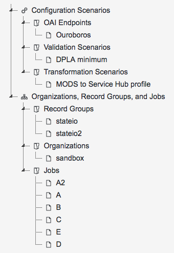
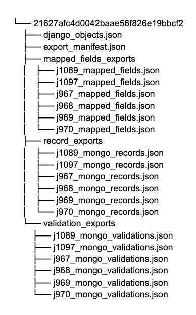
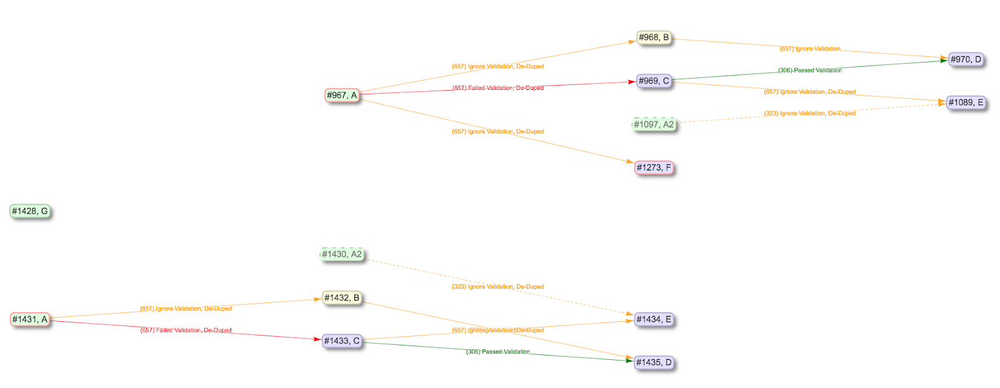
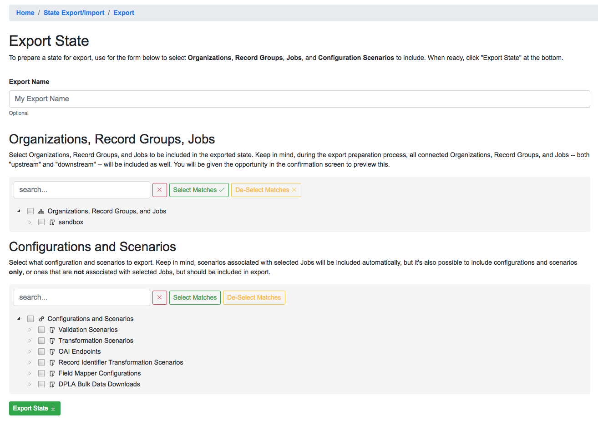
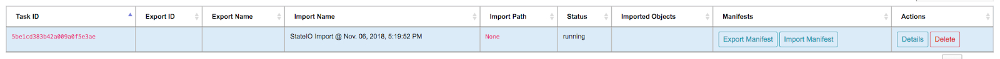
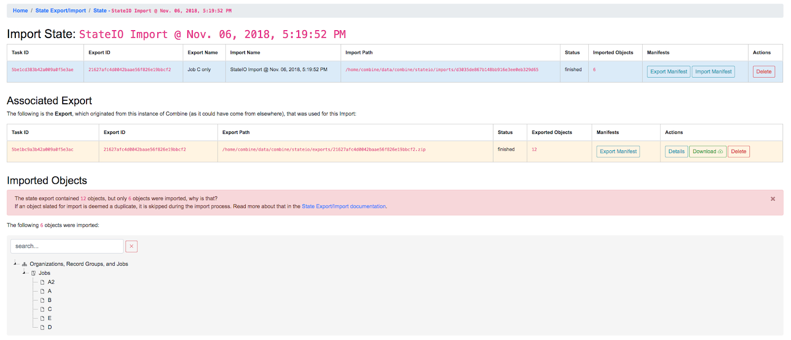
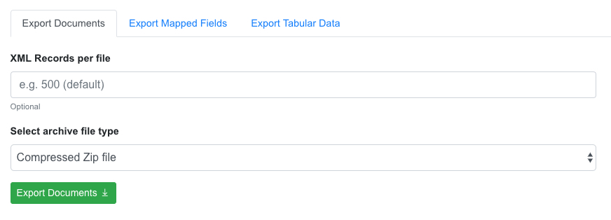
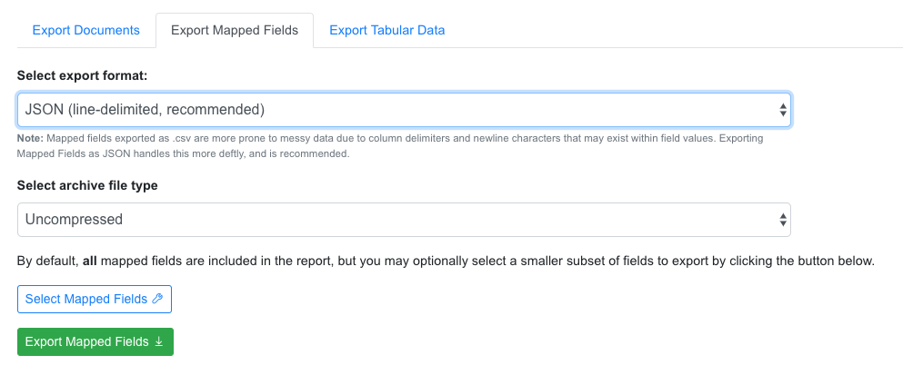
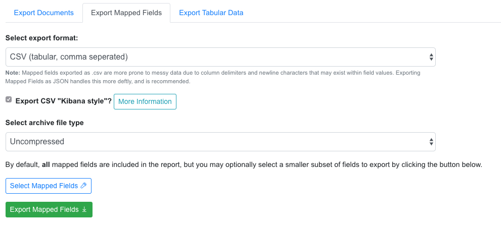
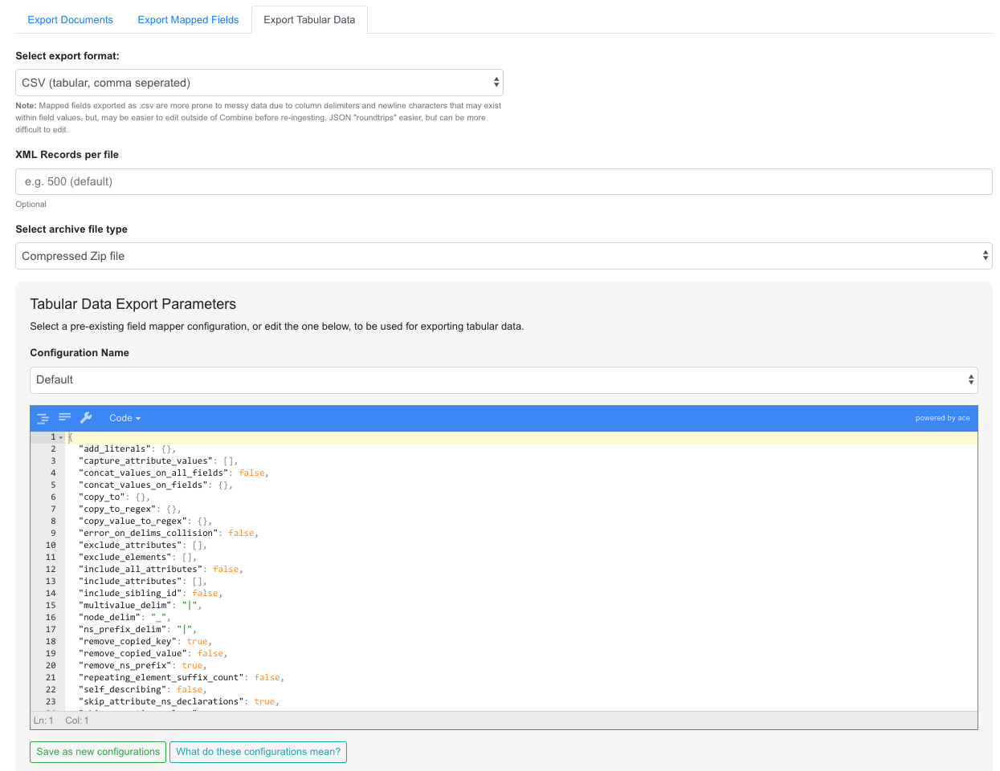

There are different ways and level of granularites for exporting and importing data in Combine. These include:
Exporting and Importing of “States” in Combine is the ability to select various level of hierarchy (Organizations, Record Groups, and/or Jobs), and optionally Configuration Scenarios (OAI Endpoints, Transformations, Validations, etc.), and export to a fully serialized, downloadable, archive file. This file can then be imported into the same, or another, instance of Combine and reconstitute all the pieces that would support those Jobs and Configurations.
Note: Importantly, when exporting Jobs, the export process takes into account:
and exports these as well. In this way, you can export or import a collection of Jobs (or a collection of Configurations, or both), and be confident that when exporting all the necessary configurations, levels of organization and hierarchy, and related Jobs will come along as well.
For example, take this contrived example Record Group:
|
| Example of a Record Group for Export |
In this example, if we were to select Job C for export, with the intention of importing to another instance of Combine that had none of the supporting pieces, what would be needed? Because exports include all “downstream” Jobs as well, quite a few things would be included:
|  |
| Job C export, with accompanying objects |
From this list of exported objects, we can see Job C down near the bottom under “Jobs”. From the image above, it’s clear that Job C is taking input Records from Job A, so it’s unsurprising that Job is included as well. We also see the Organization “sandbox”, and the Record Group “stateio” are included as well. When exporting state, the organizing hierarchies are included as well.
Why then, are we seeing the Record Group “stateio2”? This is because Job A2 falls under that Record Group, and is a “downstream” Job for Job A, and so it gets swept up in the export. The exports are, by design, greedy in what they assume will be needed to support the export of a Job. Of note, we also see some Configuration Scenarios that were used by the Jobs A, B, C, D, E, and A2. During import, if they exist already, they will be skipped, but they are needed in the event they do not yet exist.Finally, note that Job G is not included, as this Job is truly not related to Job C other than falling under the same Record Group.
When Jobs are exported, the following happens:
A typical export might look like the following:
|  |
| Example of an Export |
This is the export from the Job C export example above. You can see the various exported Jobs are represented in the Record exports, but all Django ORM objects are serialized to the single django_objects.json file.
On import, this zip file is decompressed, and the various pieces are imported in the correct order. To extend the example above, if we were to re-import that export for Job C, we would see the following created:
|  |
| Results of Job C export, re-imported |
As you can see, it’s a virtual duplication of the Jobs and linkages, and behind the scenes, all the Configuration Scenarios and organizing hierarchy to support them. All imported items get newly minted identifiers as if they were new, but because they have pre-existing linkages and relationships, special care is made to ensure those linkages persist even to the new identifiers.
To export a state in Combine, first navigate to “Configuration” from the navbar at the top, and then “Combine State Export/Import” at the very bottom. This should land you at a screen that looks like the following:
 |
| State Export/Import main view |
The page is defined by two tables, Exports and Imports. Exports originated from this instance of Combine, Imports may come from this instance of Combine or another. When an export is conducted, it is stamped with a unique identifier. This identifier is referenced during the import process, allowing the tethering of imports to exports. This will become more clear as you click around the Export and Import views.
To begin an export, click “Export State” under the Export table. On the next screen, you will be presented with something similar to the following:
|  |
| State export form |
Names for exports (and imports) are optional. The idea is to select Organizations, Record Groups, Jobs, and Configuration Scenarios that will be included in the Export, from the hierarchical trees. The trees are searchable, and have some capacity for selecting search matches.
For example, a search for “static” brings up a couple of Job matches, and clicking “Select Matches” would include these in the export:
 |
| Export: Searching for Jobs |
Note: While there is a dedicated “Configurations and Scenarios” tree to select items from, it is worth remembering that any configurations used by selected Jobs will automatically be included in the Export. Think about a fictional Job foo that has two Validation Scenarios applied, bar and baz. If foo were to be imported into another instance of Combine, it would require those Validation Scenarios to exist such that they could be rerun and referenced.
When all desired export objects have been selected from both “Organizations, Record Groups, Jobs” and “Configurations and Scenarios”, click “Export State” at the bottom. This will redirect back to the State Export/Import overview table, with the export running as a background tasks, and the following has been created:
 |
| Export for Job C |
 |
| Details for Job C export |
At this point, a user may download the export, or in our case, note the filepath location on disk that we’ll use for importing.
To import a previously exported state, click on the “Import State” button from the main State Export/Import page. You will be presented with a form that looks like the following:
 |
| Details for Job C export |
To continue the example, we can use the filepath location /home/combine/data/combine/stateio/exports/21627afc4d0042baae56f826e19bbcf2.zip from our previous export, by clicking the “Filesystem” tab in the import form. Then, click “Import State” to initialize another background process for importing the state.
Immediately we are redirected, and a new Import row is created indicating it is “running”:
|  |
| Details for Job C export |
 |
| Details for Job C export |
|  |
| Details for Job C import |
However, the tree showing what objects were imported has a warning message about not all objects being imported, and looks suspiciously smaller than the amount of exported objects. What’s going on here?
State Import and Duplication
When importing, the import process attempts to skip the duplication of:
Jobs are happily duplicated, as this is often the point of state export / import, and have value even in the duplicate. But all “supporting” infrastructure like Organizations or Record Groups, or any configuration scenarios like OAI Endpoints, Transformations, or Validations, as long as they function identically, nothing is gained by having a duplicate.
For configuration scenarios, a duplicated is deemed identical when the name and “payload” of the scenario is identical. So, if an export contains a Transformation called MODS to Dublin Core, but one already exists by that name, and the XLST payload is byte-for-byte identical, a new Transformation scenario will not be created, and all references will now point to this pre-existing Transformation Scenario.
For Organizations and Record Groups, the decision was a bit more complicated, but feedback suggested it would be most beneficial to have Jobs “slot in” to pre-existing Record Groups if they existed under an identically named Organization. For example, if Job C was exported under Record Group foo, which was under Organization bar, but a Record Group with name foo already exists under an Organization named bar, neither will be created, and Job C will import under the pre-existing foo Record Group. This decisions hints at the singularly organizational role of Organizations and Record Groups, with their uncontrolled, human readable name as their primary characteristic.
Exporting and Importing State in Combine provides a powerful way to “parachute” data out of Combine, supporting reinstalls, upgrades, or movements to another server. However, it does not come without complexity. It is encouraged to experiment with some exports and imports of small Jobs and Record Groups, with varying configuration scenarios applied, to get a feel for what is included in export, and how de-duplication works.
Note, also, that size of exports can get large! A Job that has 500k records, might actually include:
That’s effectively 1.5million documents to export. If this exists in a “pipeline” with 3 other Jobs of similar size, you’re looking at potentially 6 million record exports. The upside is, all the computation time that went into transformations, validations, field mapping, etc., is complete and included with an import of a state. The import time is purely I/O to the databases, but it should recreate the “state” of the original export.
Records can be exported in three ways:
For any of these methods, records from a single Job, or all Published Records, may be exported.
Exporting documents will export the XML document for all Records in a Job or published, distributed across a series of XML files with an optional number of Records per file and a root element
|  |
| Export Documents tab |
- archive.zip|tar
|
The following screenshot shows the actual result of a Job with 1,070 Records, exporting 50 per file, with a zip file and the resulting, unzipped structure:
 |
| Example structure of an exported Job as XML Documents |
When a Job is exported as Documents, this will send users to the Background Tasks screen where the task can be monitored and viewed.
Another way to “publish” or distribute Records from Combine is by exporting flat files of Record XML documents as an archive file. This can be done by clicking the “Export” tab and then “Export Documents”. Read more about exporting here.
Publish Set IDs will be used to organize the exported XML files in the resulting archive file. For example, if a single Job was published under the Publish ID foo, and two Jobs were published under the Publish ID bar, and the user specified 100 Record per file, the resulting export structure would look similar to this:
 |
| Publish IDs as folder structured in exported Published Records |
Mapped fields from Records may also be exported, in one of two ways:
Both default to exporting all fields, but these may be limited by selecting specific fields to include in the export by clicking the “Select Mapped Fields for Export”.
Both styles may be exported with an optional compression for output.
JSON Documents
This is the preferred way to export mapped fields, as it handles characters for field values that may disrupt column delimiters and/or newlines.
|  |
| Export Mapped Fields as JSON documents |
CSV
Alternatively, mapped fields can be exported as comma-seperated, tabular data in .csv format. As mentioned, this does not as deftly handle characters that may disrupt column delimiters
|  |
| Export Mapped Fields as JSON documents |
mods_subject_topic.0, mods_subject_topic.1, mods_subject_topic.0
history, michigan, snow
But if the checkbox, Export CSV "Kibana style"? is checked, all multi-valued fields will export in the “Kibana style” where a single column is added to the export and the values are comma separated, e.g.,
mods_subject_topic
history,michigan,snow
Exporting Tabular Data has some similarity with exporting mapped fields, but for a different purpose. Exporting Tabular Data will export either CSV or JSON suitable for re-harvesting back into Combine as a Tabular Data Harvest. To this end, Tabular Data harvesting is a bit more forgiving for field names, and total number of fields. More tecnically, the export is not coming from ElasticSearch where mapped fields live for a Job, but instead, directly from the XML documents.
Some options looks similar to mapped fields exporting, but also include a section for “Export Parameters”:
|  |
| Export Mapped Fields as JSON documents |
It is also possible to export assets directly to Amazon AWS S3 Buckets from some locations in Combine. At the time of this writing, it is possible to export to S3 for all types of Record exports, but each type of export varies slightly in how it exports to S3.
Note: All examples below are of exporting Published Records to S3, but the same workflows apply to a single Job as well.
The motivation to support exporting to S3 from Combine has the following helpful breakdown:
The second reason, providing online, accessible data dumps that are readily read by other instances of Spark, is perhaps the most compelling. By exporting, or “publishing”, to S3 as Apache Parquet files or JSONLines, it is possible for others to load data exported from Combine without sacrificing some dimensionality of the data as it exists in the database.
One use case might be exporting Records published in Combine to S3, thereby “publishing” them for another entity to read via Spark and act on, where formerly that entity would have had to harvest via OAI-PMH from Combine, relying on network uptime and connections. If the Records are stored in a database already, with ancillary metadata like Record identifiers, why not share that directly if possible! S3 buckets provide a convenient way to do this.
Authentication to read/write from S3 is configured in localsettings.py under the following two variables:
After these are added for the first time, restarting the Livy/Spark session and backround tasks worker is required.
From the “Export Documents” tab of a Job or Published Records export screen, it is possible to export to S3 by clicking the “Export to Amazon S3 Bucket?” checkbox:
 |
| Checkbox for exporting to S3 |
 |
| Form for exporting Documents to S3 bucket |
When exporting documents to S3, two options are available:
If exporting as Spark DataFrame, a couple particularly important columns are:
From the “Export Mapped Fields” tab of a Job or Published Records export screen, it is possible to export to S3 by clicking the “Export to Amazon S3 Bucket?” checkbox:
 |
| Checkbox for exporting to S3 |
 |
| Form for exporting Mapped Fields to S3 bucket |
Unlike exporting Documents or Tabular Data, Mapped Fields may only be exported to S3 as an archive file.
From the “Export Tabular Data” tab of a Job or Published Records export screen, it is possible to export to S3 by clicking the “Export to Amazon S3 Bucket?” checkbox:
 |
| Checkbox for exporting to S3 |
 |
| Form for exporting Tabular Data to S3 bucket |
When exporting documents to S3, two options are available: